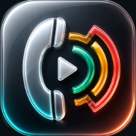

Reactions, one tap away
Your sounds live on big, colourful Pads. Tap one and the other person hears it instantly, mixed right into the call. Try any Pad on your own speaker first.
- FAAAH
- Wait a minute…
- Vine boom
- Bruh
- Sad trombone
- Ba dum tss
- Crickets

The perfect FAAAH. A well-timed “wait a minute…”. The sad trombone after your friend’s joke. HumFut puts the internet’s favourite sounds on big Pads and plays them straight into your Phone and FaceTime calls.
iPhone with iOS 26 or later · First 3 calls free · No account, no tracking
Pick a way and watch it play through, one step at a time. Tap a step to jump to it.
Way 1 · about 10 seconds
Every classic internet sound is already on a soundboard site somewhere. Open it in Chrome or Safari and send it to HumFut with the Share button.
Way 2 · audio from your other apps
That iconic line in a YouTube video, a sound effect in a game, a moment in a podcast: if it plays on your iPhone, HumFut can keep it.
Way 3 · files you already have
Downloaded sounds, AirDropped clips and music you own all work. Short sounds become Clips for your Pads, longer ones become Tracks for background music.
Bring in any sound you love, put it on a Pad, and drop it into a live Phone or FaceTime call at exactly the right moment.
Your sounds live on big, colourful Pads. Tap one and the other person hears it instantly, mixed right into the call. Try any Pad on your own speaker first.
Found the perfect sound on a soundboard site? Tap Share, pick HumFut, done. It keeps its name.
That line from a video, a clip from a game: play it and HumFut keeps it, with the silence trimmed off.
Play a background Track, loop it, and set how loud it is for them and for you.
Already have an MP3 or M4A? Add it from Files as a short Clip or a long Track.
One set of Pads for game night, another for family calls. Collapse the ones you’re not using.
Fire Pads, change levels and stop everything from your wrist while your iPhone stays put.
Never uses your microphone, never records or listens to a call. No account, no ads, no tracking.
Call it whatever you’ll recognise mid-call.
Six Pad colours and any emoji, so you can find it without reading.
Set exactly where the sound starts and ends, and how loud it plays.
Play a Track behind everything: lobby jazz while they wait, dramatic drums for the big reveal, rain for a chill catch-up. Your Reactions play on top.
Leave your iPhone on the table and play Pads from Apple Watch. Swipe between Collections, adjust levels, or tap the square to stop everything. Your library stays in sync between your own two devices.
HumFut uses the iOS permission made for adding audio to calls. Turn on Call Sounds during a live Phone or FaceTime call and your Pads go straight in.
HumFut never records a call and never listens to one. It only adds the sounds you choose.
No servers, no analytics, no account. Your sounds stay on your iPhone and Apple Watch. Privacy Policy
Call from the Phone or FaceTime app as usual. HumFut never places a call itself.
After that, one purchase lets the other person hear HumFut on every call, forever, and it works with Family Sharing. Building your library and trying sounds on your own speaker are always free.
Live Phone and FaceTime calls on an iPhone running iOS 26 or later. HumFut adds audio only while a call is connected, and it pauses while you’re screen sharing.
HumFut shows up when what you’re sharing is an audio file. On a soundboard site, open the sound’s own page and share from there. Also open HumFut once after installing it, so it can finish setting up.
Clips for your Pads can be up to 30 seconds. A capture stops by itself after 60 seconds and keeps the first 30 seconds of sound. Anything longer can be imported as a Track for background music.
HumFut is for sounds that are obviously not real: airhorns, laugh tracks, funny clips, music. It won’t add sounds that could be mistaken for something real on a call, like sirens, phone-menu tones or ringtones.
Check that Call Sounds is on and the call is connected. Muting the call mutes HumFut too, because it uses the same audio path as your voice. More troubleshooting